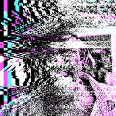

Omino Diffusion+

Muling iginuguhit ang layer sa maliit na palette at hinihila ang rounding error sa isang direksyon, para sa glitchy dithered na itsura na nagiging buhay sa galaw.
Mga Setting
| Setting | Uri | Saklaw | Default |
|---|---|---|---|
| Anggulo | Anggulo | 0° hanggang 3600° | 0° |
| Lakas | Numero | 0.01 hanggang 1 | 1 |
| Hakbang | Numero | 1 hanggang 200 | 35 |
| Timbang ng error | Numero | 0 hanggang 10 | 0.75 |
| Pagbaba ng timbang | Numero | 0% hanggang 100% | 0% |
| Palette | Pagpipilian | Itim/Puti, RGB Posterize (2 antas), RGB Posterize (3 antas), RGB Posterize (4 antas), Gray (3 antas), Gray (4 antas), CGA Berde/Pula/Dilaw, CGA Cyan/Magenta/Puti, CGA Asul/Cyan/Magenta/Puti, Saturate at Posterize, Sariling 2-kulay, Sariling 3-kulay, Sariling 4-kulay, Sariling 5-kulay, Sariling 6-kulay | RGB Posterize (3 antas) |
| Kulay 1 | Kulay | – | #000000 |
| Kulay 2 | Kulay | – | #5555FF |
| Kulay 3 | Kulay | – | #55FF55 |
| Kulay 4 | Kulay | – | #55FFFF |
| Kulay 5 | Kulay | – | #FF5555 |
| Kulay 6 | Kulay | – | #FF55FF |
| Alpha | Numero | 0 hanggang 1 | 1 |
| Blending mode | Pagpipilian | Normal, Multiply, Screen | Normal |